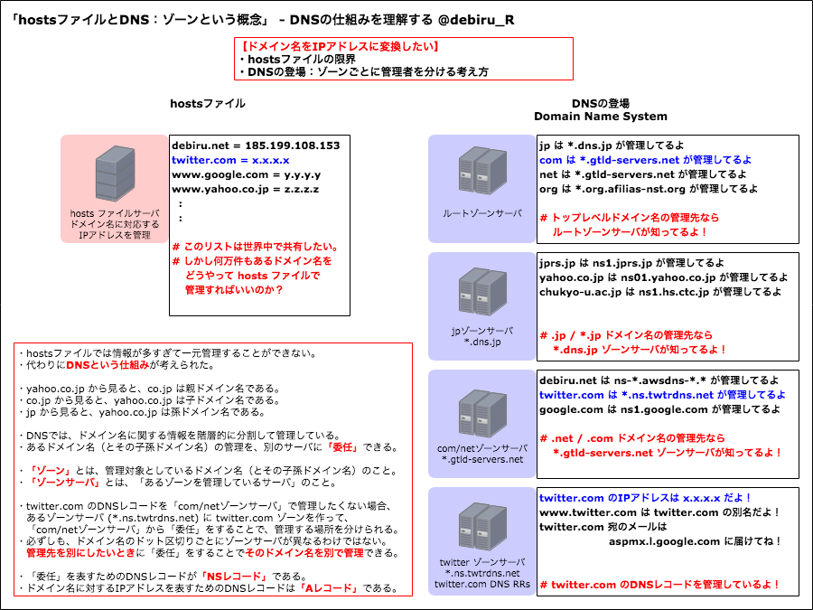
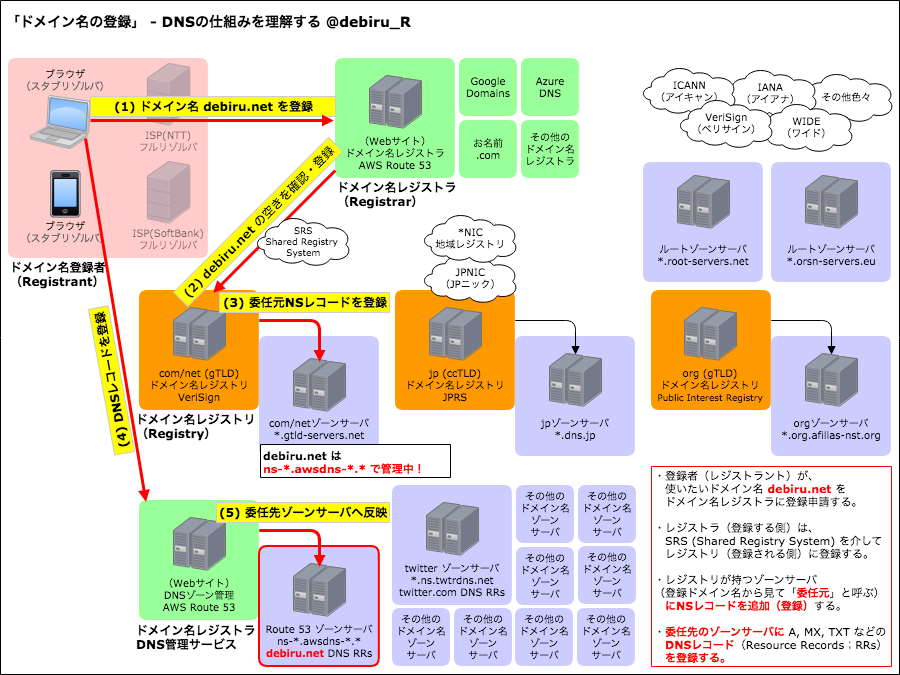
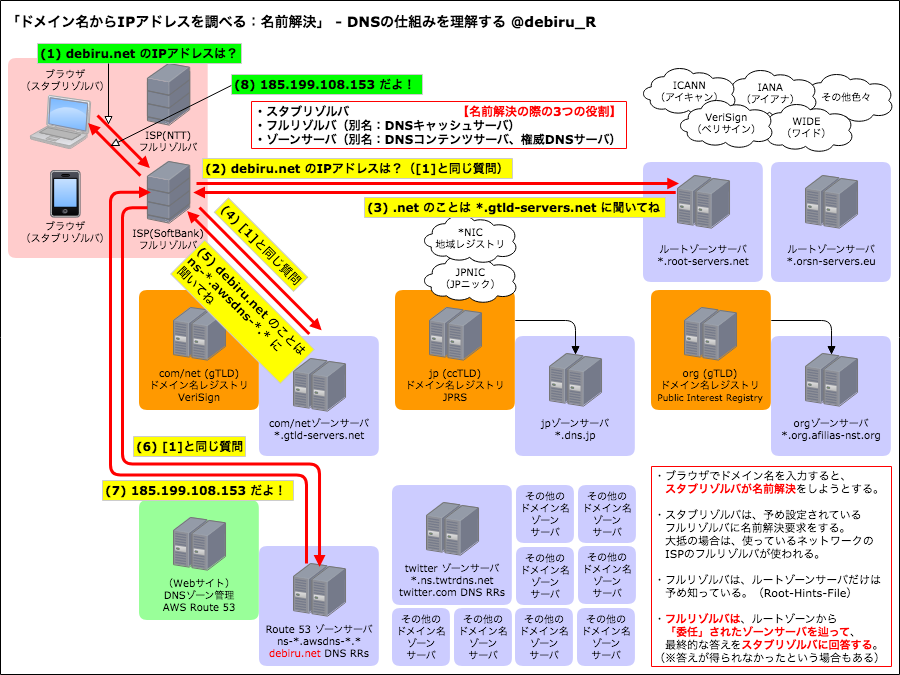
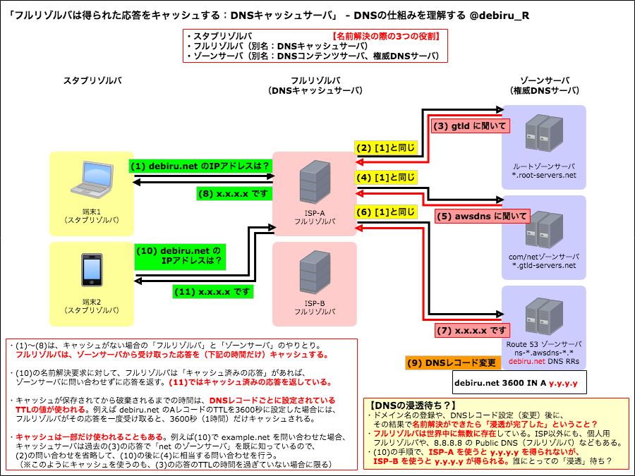
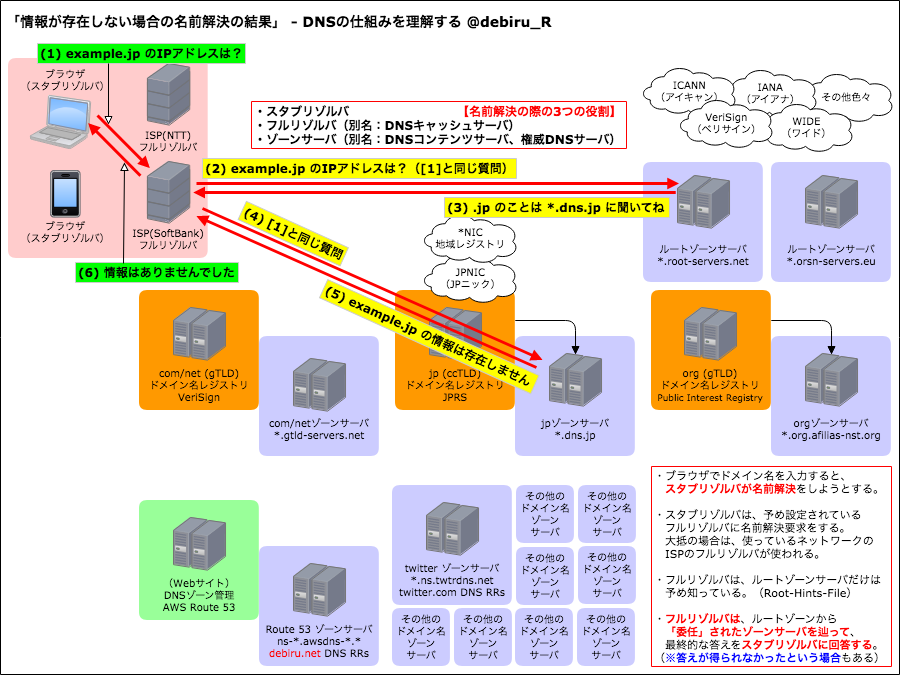
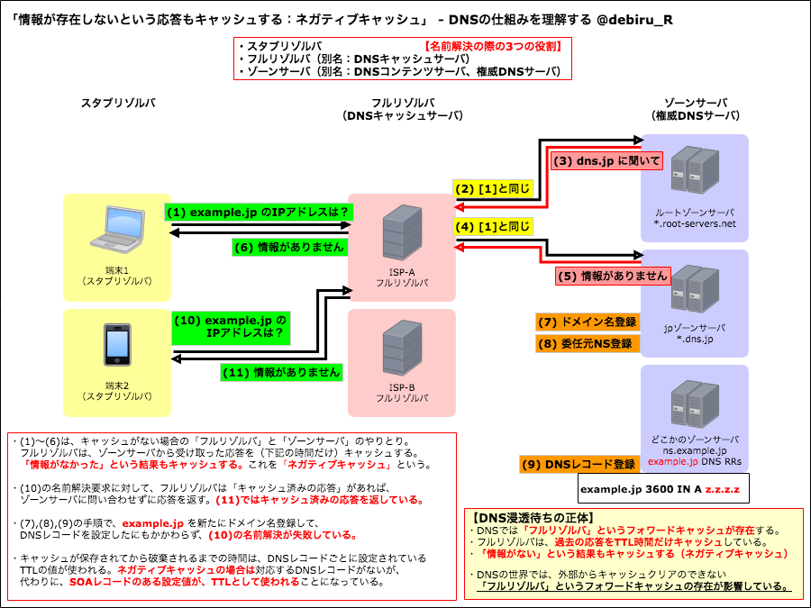

¶TL;DR：DNSを触る際の重要なポイント
長すぎて読む気が起きない人へ。DNS七箇条。
- 浸透の完了は存在しない。（浸透した/していないように見えるのは、あなただけ）
- 浸透待ちの正体はフォワードキャッシュの残骸。（TTLが尽きていないDNS応答のキャッシュ）
- DNSレコードを変えてから浸透を待つな。（時すでに遅し、打つ手なし）
- 新しいDNSレコード設定時にはURLにアクセスするな。（ネガティブキャッシュが生成される）
- 浸透時間と思っているものは、DNSレコードを変える前に操作できる。（DNSレコードを変える前に、TTLを短くすべし）
- DNSサーバ移転には気をつけろ。TTLの変更と同様に、肝心なのは事前作業。（NS移転とA移転を同時にやるな）
- 浸透いうな。（浸透を待てと言っている人に騙されるな）
140文字バージョン：ツイートする
DNS七箇条 https://debiru.net/dns/ 【一】浸透するのはあなただけ。 【二】浸透待ちの正体はキャッシュ。 【三】浸透を待ったら時すでに遅し。 【四】無闇にURLにアクセスするな。 【五】浸透を待つ前にTTL変更。 【六】移転時はNS移転とA移転を別々に。 【七】浸透いうなの真の意味に気付け。
きちんとした説明は、以下の「第二弾」で扱う予定。
以下では、作っている本人も分かりづらいと感じている図を使いながら、複雑そうなDNSの仕組みを、少しでも正しく理解するためのきっかけになればと思いながら解説していきます。
- 第一弾：DNSの仕組みを理解する
- 第二弾：適切なDNSレコードの設定手順と確認方法（2019年6月公開予定）
- 第三弾：DNS移転シミュレーター（2019年8月公開予定）
¶第一弾：DNSの仕組みを理解する
¶1章. hostsファイルとDNS：ゾーンという概念

ドメイン名に対応するIPアドレスを知りたい。それが分かるような対応表（hostsファイル）を共有すればいい時期もありました。
使われるドメイン名が増えると、その対応表を更新することが困難になりました。ひとつの巨大なhostsファイルを管理することは現実的ではないのです。
そこで「DNS (Domain Name System)」という仕組みが登場しました。
DNSでは、ドメイン名に関する情報を一元管理せずに、管理者（DNSレコード管理サーバー）を階層的に分散させる仕組みになっています。
twitter.com を例にすると、そのドメイン名とサブドメイン（子孫ドメイン名）は *.ns.twtrdns.net というサーバで管理することができて、その場合は親のドメイン名（com）を管理するサーバ（*.gtld-servers.net）は「twitter.com のIPアドレスなどのDNSレコードを知らない」ことになります。
comを管理するサーバからすれば、twitter.comの情報は「別のサーバに管理を任せた」ということになります。これが「委任」です。管理を任せる範囲を「ゾーン」と呼びます。つまり、上記の例では *.ns.twtrdns.net というサーバは「twitter.com ゾーン」を管理しています。
- DNSの情報を管理するサーバのことを「ゾーンサーバ」と言います。「権威DNSサーバ」や「DNSコンテンツサーバ」と呼ばれることもあります。
- 他にも種類があるため、単に「DNSサーバ」と呼ぶと混乱を招くことがあります（後述するセクションで登場する「DNSキャッシュサーバ」があります）。
ドメイン名の管理を階層的に分散させることで、何万もあるドメイン名に関する情報を現実的に管理できるようになっています。
ドメイン名の階層的な管理の分散は、市区町村役所における住民登録と似ています。
hostsファイルの考え方では、日本国政府が日本国民全員を把握して管理する必要があります。一方で、DNSの考え方では、日本国政府は日本国民を把握する必要はなく、東京都民であれば東京都庁に管理を委任します。
このとき、東京都庁が東京都民全員を管理してもよいのですが、市区町村で更に管理を分割したいと思えば、渋谷区民の情報は渋谷区役所に委任します。この場合、渋谷区民の「ある人」が「どこに住んでいるか」という情報（ドメイン名とIPアドレスの関係）は、渋谷区役所しか知りません。政府や都庁は、下部組織に委任した以上、自身では情報を管理しないのです。
正確には、「委任をした範囲（ゾーン）の子孫情報は管理できない」ということになります。
政府や都庁が、ある国民の情報を管理することはできます。政府が「東京都民の情報は東京都庁に委任するけれど、沖縄県民の情報は政府自身で管理する」こともできますし、東京都庁が「渋谷区民の情報は渋谷区役所に委任するけれど、調布市民の情報は都庁自身で管理する」ことができます。
できないのは、政府が「東京都民の情報は東京都庁に委任するけれど、世田谷区民の情報は政府自身で管理する」という「委任した子孫に手を出すこと」です。それはできません（実際に設定しても委任が優先されるため無視されます）。これが「階層的な分散（DNSがツリー構造であること）」を意味します。
¶2章. ドメイン名の登録

この図、ごちゃごちゃしているように見えるでしょうか？実際、ごちゃごちゃしているかもしれません。作っている私が見てもそう思います。
次のセクションの説明で図を共通化するために要素を書き出しているので、このセクションでは「赤線の部分」に注目してみてください。
debiru.net というドメイン名を登録して、さらにDNSレコードを設定する手順を確認します。
次の4つの概念に注目してください。
- 登録者（ドメイン名レジストラント）：利用者（あなた）のこと
- ドメイン名レジストラ（登録する側）：「Route 53」や「お名前.com」など
- ドメイン名レジストリ（登録される側）：「JPRS」や「VeriSign」など
- ゾーンサーバ（DNSレコードを管理する場所）
- 登録者は、（AWS Route 53 のような）ドメイン名レジストラに登録申請を行う。
- ドメイン名レジストラは、専用のシステム（Shared Registry System）を介して、申請されたドメイン名の空きを確認してドメイン名レジストリに登録を行う。
- ドメイン名レジストリは、自身が管理するゾーンサーバに「debiru.net の NS レコード」を追加する。このゾーンサーバを「委任元」と呼ぶ。
- 登録者は、（DNSゾーン管理サービスを用いて）ゾーンサーバにDNSレコードを設定する。
- ゾーンサーバに設定内容が反映される。
「あなた」は「ドメイン名レジストラ」にログインして「ドメイン名の管理」を行います。そして、そのドメイン名に対する「DNSレコード設定」を行います。
- ドメイン名の登録
- 委任元NSレコードの登録（レジストリのゾーンサーバ）
- DNSレコードの設定（委任先のゾーンサーバ）
この3つの操作を行うことで、登録したドメイン名 debiru.net の DNS レコードを設定できるようになります。
「(3) 委任元NSレコードの登録」は「ネームサーバの設定」と呼ばれることもあります。debiru.net のDNSレコードを「どこのゾーンサーバで管理しているのか」を「親（委任元）のゾーンサーバ」に教えています。
「(5) 委任先ゾーンサーバへの反映」では、DNSレコードの設定操作をした後、実際にゾーンサーバへ設定値が反映されるまでに「数十秒から5分程度」の時間がかかることがあります（プライマリサーバへの反映、および冗長化のためのセカンダリサーバをスレーブサーバとしている場合のゾーン転送）。
¶3章. ドメイン名からIPアドレスを調べる：名前解決

ドメイン名からIPアドレスを調べる際のDNSの動作を見ていきましょう。
次の3つの概念に注目してください。
- スタブリゾルバ（端末の中でDNS問い合わせを行うプログラム）
- フルリゾルバ（DNSキャッシュサーバ）：ISP（インターネットサービスプロバイダ）側に存在するDNSサーバ
- ゾーンサーバ（権威DNSサーバ）：あるドメイン名に関するDNSレコードを管理しているサーバ
- ブラウザのアドレスバーに debiru.net と入力すると、スタブリゾルバがフルリゾルバに名前解決要求を行う。
- フルリゾルバは、信頼できるルートゾーンサーバを予め知っているので、そこに debiru.net のIPアドレスを質問する。
- ルートゾーンサーバは net の情報を委任しているので委任先を答える。
- ゾーンサーバは、自身が知っていれば答えを、委任していれば委任先を、情報が何もなければそのことを返答する。
- フルリゾルバは、教えてもらった委任先に再度質問する。
- net ゾーンサーバは、前のセクションで行ったドメイン名登録によって、debiru.net の委任先を知っているので、委任先を答える。
- フルリゾルバは、教えてもらった委任先に再度質問する。
- （debiru.net のDNSレコードを管理している）Route 53 のゾーンサーバは、登録されているIPアドレス（Aレコードの情報）を答える。
- フルリゾルバは、（委任先情報ではなく）回答をもらったので、その結果をスタブリゾルバに返す。
IPアドレスが得られた後は、内部的にそのIPアドレスへ接続することでWebページが表示できます（HTTPリクエストの場合の例）。
フルリゾルバが頑張っている様子が分かりますか？
スタブリゾルバの「debiru.net のIPアドレスは？」という問い合わせに対して、関連各所に聞き回って最終的な情報を得てきています。ここで注目すべきは、信頼できる情報を持っている相手に聞き回っているという点です。もしフルリゾルバが「debiru.net を知っている人がいたら教えてください」などと様々なゾーンサーバに出鱈目に聞きまわってしまったら、悪意のある第三者（第三のゾーンサーバ）が偽りの情報を伝えてしまうかもしれません。これを防ぐ仕組みが「委任」です。
フルリゾルバは、最も信頼できる相手（ルートゾーンサーバ）に聞きに行き、その相手が知っていたら答えをもらいます。知らなければ、代わりに知っている信頼できる人（委任先ゾーンサーバ）を教えてもらいます。このとき、代わりに知っている人がいないこともありますが、その場合は「その情報は分からないので答えられません」とゾーンサーバは答えます。
※正確にはゾーンサーバは、IPアドレスを知っていても（Aレコードが登録されていたとしても）、委任先がある場合（NSレコードが登録されている場合）には、「委任先に聞け」という答えを優先して返答します。
フルリゾルバは頑張って「聞き回って」いますが、ゾーンサーバは「答える」か「別の人に聞いて」と言ってくるだけです。
この「聞き回る動作」を「反復問い合わせ」といいます。相手が最終的な答えをくれない（委任先を紹介される）かもしれないけれど、その場合は委任先に再度質問するという動作です。
¶4章. フルリゾルバは得られた応答をキャッシュする：DNSキャッシュサーバ

以下のステップ(1.)〜(8.)は前のセクションと同じです。
ここで注目すべきなのは、「フルリゾルバ」は、「ゾーンサーバ」から受け取った応答（委任先情報、または回答）をキャッシュするということです。
- ブラウザのアドレスバーに debiru.net と入力すると、スタブリゾルバがフルリゾルバに名前解決要求を行う。
- フルリゾルバは、信頼できるルートゾーンサーバを予め知っているので、そこに debiru.net のIPアドレスを質問する。
- ルートゾーンサーバは net の情報を委任しているので委任先を答える。
- ゾーンサーバは、自身が知っていれば答えを、委任していれば委任先を、情報が何もなければそのことを返答する。
- フルリゾルバは、教えてもらった委任先に再度質問する。
- net ゾーンサーバは、前のセクションで行ったドメイン名登録によって、debiru.net の委任先を知っているので、委任先を答える。
- フルリゾルバは、教えてもらった委任先に再度質問する。
- （debiru.net のDNSレコードを管理している）Route 53 のゾーンサーバは、登録されているIPアドレス（Aレコードの情報）を答える。
- フルリゾルバは、（委任先情報ではなく）回答をもらったので、その結果をスタブリゾルバに返す。
- debiru.net のIPアドレスを x.x.x.x から y.y.y.y に書き換える。
- スタブリゾルバが debiru.net のIPアドレスを問い合わせる。
- フルリゾルバは「x.x.x.x です」とスタブリゾルバに回答する。
ステップ(9.)でIPアドレスを書き換えているにもかかわらず、その後の問い合わせで得られたIPアドレスが書き換える前の x.x.x.x になっています。
これは、ステップ(7.)でのゾーンサーバからの回答をキャッシュしているために、その回答がそのままスタブリゾルバに返された、という状況です。
前のセクションでは「反復問い合わせ」を解説しました。フルリゾルバからゾーンサーバに、回答が得られるまで委任先を辿って問い合わせる動作です。
一方、自分で反復問い合わせをせずに相手に最終的な答えを求めている質問が、最初のスタブリゾルバからフルリゾルバにしている名前解決要求です。これを「再帰問い合わせ」といいます。スタブリゾルバが「再帰問い合わせ」をすると、フルリゾルバは「反復問い合わせ」をします。
フルリゾルバは、スタブリゾルバから質問を受けて、返答をしなければなりません。そのために「反復問い合わせ」をしますが、「聞き回る」動作は時間がかかる大変な作業です。
このために、フルリゾルバは反復問い合わせした際の「ゾーンサーバからの応答（回答、または委任先情報）」を「キャッシュ」します。なお、「再帰問い合わせ」に対して、相手が知っていたら答えてもらう問い合わせを「非再帰問い合わせ」といいます。フルリゾルバはゾーンサーバに対して「非再帰問い合わせ」をしています。
キャッシュされる時間は、ゾーンサーバからの応答に含まれる「TTL（Time To Live）」によって決まります。例えば「IPアドレスの回答（Aレコード）」の「TTL(秒)」が3600の場合、キャッシュは1時間保持されます。
正確には、常に1時間キャッシュされるわけではなく、「最長で1時間キャッシュされる」という意味になります。フルリゾルバはキャッシュすることが必須ではないので、指定されたTTL秒までキャッシュしてもいいし、それより短い時間だけキャッシュしてもいいし、キャッシュしなくてもよいのです。とはいっても、一般的なフルリゾルバは指定された時間だけキャッシュします。
¶5章. 情報が存在しない場合の名前解決の結果

スタブリゾルバからの問い合わせに対して、そのドメイン名の情報を持つゾーンサーバが存在しない場合。
- スタブリゾルバが example.jp のIPアドレスをフルリゾルバに問い合わせる（再帰問い合わせ）。
- フルリゾルバは、信頼できるルートゾーンサーバを予め知っているので、そこに example.jp のIPアドレスを問い合わせる（非再帰問い合わせ）。
- ルートゾーンサーバは jp ゾーンを委任しているので委任先を答える。
- ゾーンサーバは、自身が知っていれば答えを、委任していれば委任先を、情報が何もなければそのことを返答する。
- フルリゾルバは、教えてもらった委任先に再度問い合わせ（非再帰問い合わせ）する。
- jp ゾーンサーバは、自身が管理するDNSレコードを調べるが、example.jp のDNSレコードは何も持っていないので「情報が存在しない」と応答する。
- この場合は「NXDOMAIN」応答となる。
- NXDOMAIN以外のケースとしては、DNSレコードは存在するが、そのレコードの種類が違うため質問には答えられない場合は「NOERROR」応答（「NODATA」応答と呼ばれる）が返される。
- フルリゾルバは、「情報が存在しない」という結果をスタブリゾルバに返答する。
フルリゾルバが「反復問い合わせ」をし終えたときには最後のゾーンサーバからの応答が得られているが、これが問い合わせへの回答だとは限らない。
この文書では「回答」という言葉を「Answer Section」を含む応答として使っているが、回答が得られない場合には「情報が存在しなかった」という応答になる。
¶6章. 情報が存在しないという応答もキャッシュする：ネガティブキャッシュ

以下のステップ(1.)〜(6.)は前のセクションと同じです。
- スタブリゾルバが example.jp のIPアドレスをフルリゾルバに問い合わせる（再帰問い合わせ）。
- フルリゾルバは、信頼できるルートゾーンサーバを予め知っているので、そこに example.jp のIPアドレスを問い合わせる（非再帰問い合わせ）。
- ルートゾーンサーバは jp ゾーンを委任しているので委任先を答える。
- ゾーンサーバは、自身が知っていれば答えを、委任していれば委任先を、情報が何もなければそのことを返答する。
- フルリゾルバは、教えてもらった委任先に再度問い合わせ（非再帰問い合わせ）する。
- jp ゾーンサーバは、自身が管理するDNSレコードを調べるが、example.jp のDNSレコードは何も持っていないので「情報が存在しない」と応答する。
- この場合は「NXDOMAIN」応答となる。
- NXDOMAIN以外のケースとしては、DNSレコードは存在するが、そのレコードの種類が違うため質問には答えられない場合は「NOERROR」応答（「NODATA」応答と呼ばれる）が返される。
- フルリゾルバは、「情報が存在しない」という結果をスタブリゾルバに返答する。
- ドメイン名登録者が、example.jp ドメイン名を登録する。
- そして委任元NSレコードに、example.jp ゾーンの権威DNSサーバを指すドメイン名を登録する。
- その上で、example.jp ゾーンの権威DNSサーバに、IPアドレス（Aレコード）を登録する。
- スタブリゾルバが example.jp のIPアドレスをフルリゾルバに問い合わせる。
- フルリゾルバは、「情報が存在しない」という結果をスタブリゾルバに返答する。
ステップ(7.)〜(9.)で example.jp ゾーンのDNSレコードを登録しているにもかかわらず、その後の問い合わせでIPアドレスを取得することができていません。
これは、ステップ(5.)でのゾーンサーバからの「不在応答」をキャッシュしているために、その回答がそのままスタブリゾルバに返された 、という状況です。
「情報が存在しない」という応答（不在応答）がキャッシュされることで、何が起こるか想像できるでしょうか。
ゾーンサーバから「IPアドレスはこれでした」という回答がされると、フルリゾルバはその回答で指定されたTTL時間だけキャッシュするのでした。
そしてキャッシュがある間は、ゾーンサーバのDNSレコードを変更しても、スタブリゾルバにはその情報が渡らないのでした（キャッシュが使われてしまうため）。
「不在応答」であっても同じことが起きます。一度、不在応答をキャッシュしてしまうと、フルリゾルバは不在応答のキャッシュを破棄するまで、ゾーンサーバに問い合わせをしなくなるのです。
「DNSレコードを設定したのに、名前解決ができない」
この状況こそが、「DNS浸透待ち」という誤解を招いている原因です。
「不在応答のキャッシュ」のことを「ネガティブキャッシュ」と呼びます。
なお、ネガティブキャッシュのキャッシュ時間（TTL）は、ゾーンを定義するためのSOAレコードに含まれる設定値によって決まります。
- ネガティブキャッシュのTTLを決定する際に関係する設定値は「4つ」あります。
- (SOA_TTL) SOAレコードのTTL値
- (SOA_MINIMUM) SOAレコードの minimum という設定値
- (MAX) フルリゾルバ側の max-ncache-ttl のようなパラメータ名で定義されている「ネガティブキャッシュのTTL上限値」
- (MIN) フルリゾルバ側の min-ncache-ttl のようなパラメータ名で定義されている「ネガティブキャッシュのTTL下限値」
- (SOA_TTL, SOA_MINUMUM_ MAX) のうち、最も小さい値を X として、(X, MIN) の大きい方の値がネガティブキャッシュのTTLとなります。
- 説明的には、「SOA_TTL と SOA_MINIMUM の小さい方が使われる」が、「MIN と MAX の範囲内に制限される」ということです。
2019年5月10日時点では、この文書はここまでになります。
質問や指摘など、何かあればお気軽に @debiru_R にメンションをいただければと思います。